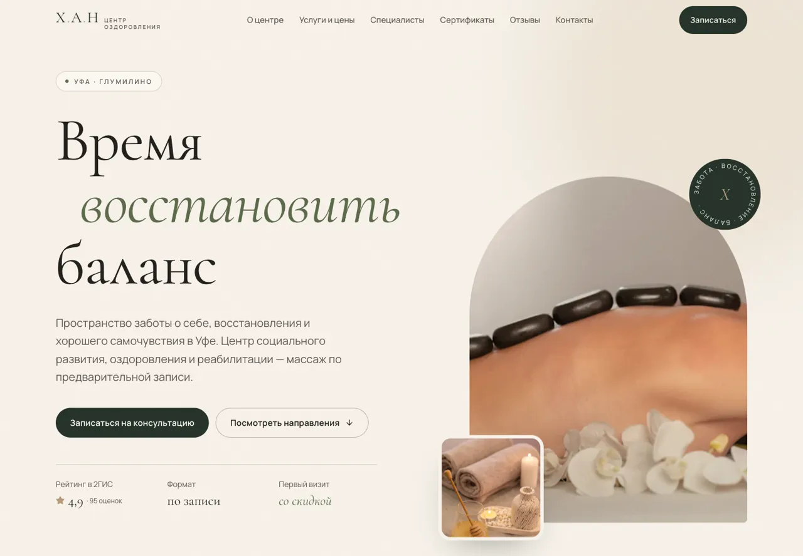
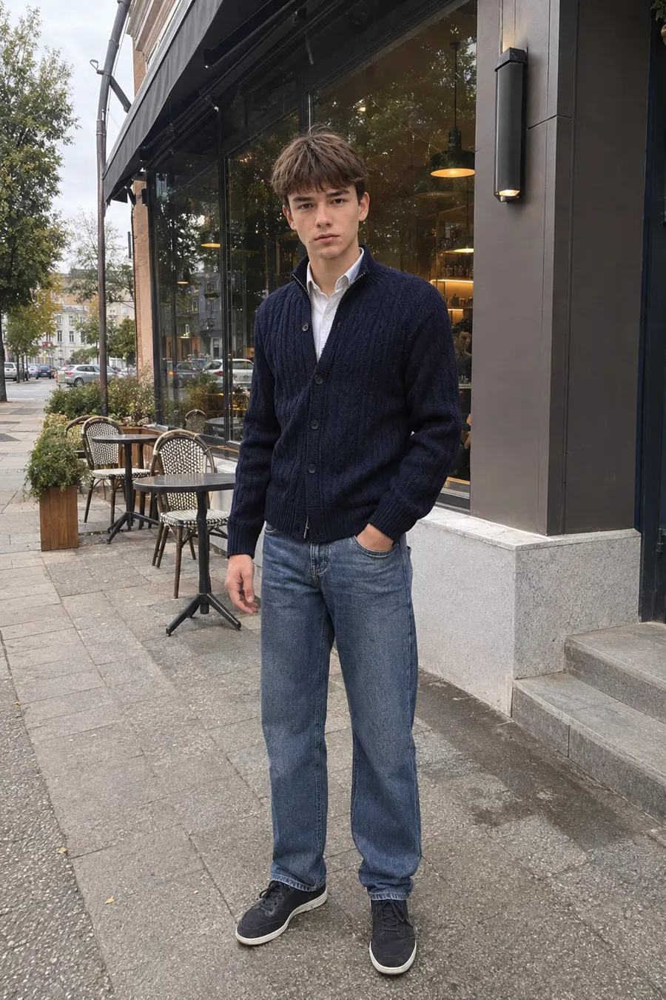
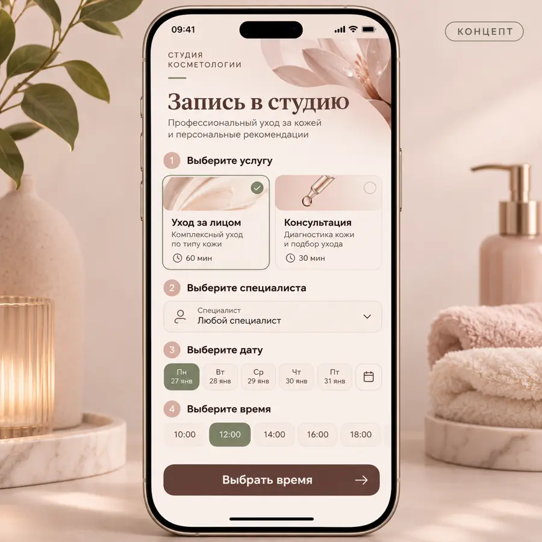
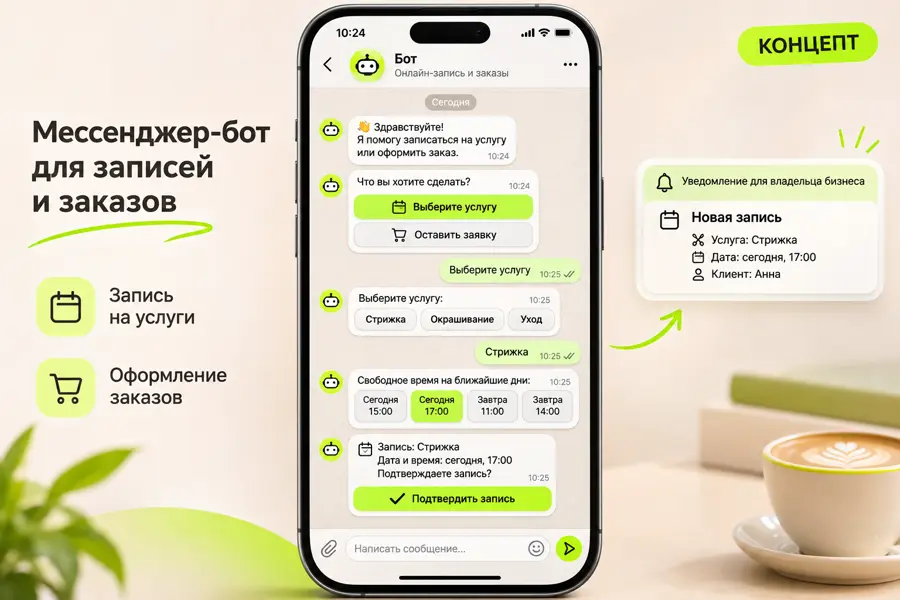
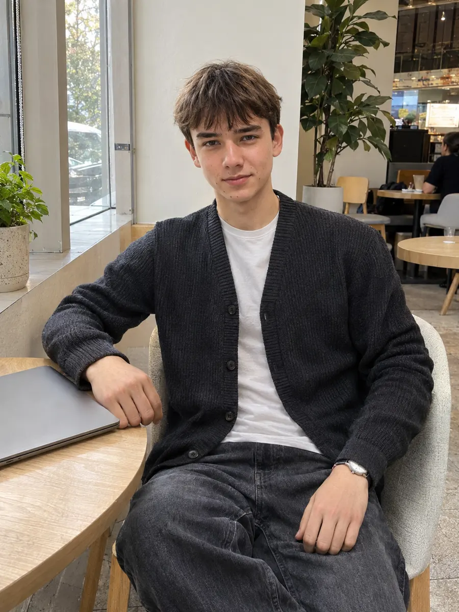

Х.А.Н
Сайт центра оздоровления · Уфа
Задача Помочь посетителю разобраться в услугах и перейти к записи.
Решение Собрал услуги, специалистов и цены в понятную структуру с заметными переходами к контакту.
Тимур · независимый разработчик
Превращаю идею в понятный цифровой продукт: от первой страницы до сценария записи, заявки или заказа.

01 / ВЫБРАННОЕ
Один опубликованный сайт и концепции интерфейсов. Статус каждого проекта указан прямо в карточке.

Сайт центра оздоровления · Уфа
Задача Помочь посетителю разобраться в услугах и перейти к записи.
Решение Собрал услуги, специалистов и цены в понятную структуру с заметными переходами к контакту.

Фитнес-клуб
Задача Дать почувствовать атмосферу клуба и помочь выбрать тренировку.
Решение Соединил фотографии, расписание, тренеров и абонементы в одну навигацию.

Мини-приложение Telegram
Задача Сократить переписку при записи на услугу.
Решение Продумал экран выбора услуги, специалиста, даты и свободного времени.

Диалог и уведомление
Задача Провести человека от вопроса до заявки без лишних сообщений.
Решение Показал выбор услуги и времени, подтверждение и уведомление владельцу.
Приложение студии красоты
Задача Упростить путь от выбора процедуры до подтверждения записи.
Решение Спроектировал каталог, выбор мастера и времени, экран предстоящих визитов.
Сегодня, 18 ноября
Приложение для задач
Задача Помочь быстро увидеть важное на сегодня.
Решение Собрал задачи, прогресс и ближайшее действие на одном экране.
02 / НАПРАВЛЕНИЯ
Начинаем с задачи: кому нужен продукт, что человек должен сделать и какие данные нужны для этого шага.
Объём разработки и нужные интеграции обсуждаем после разбора задачи.

ТИМУР / УФА03 / КТО ДЕЛАЕТ
Мне 16, я из Уфы. Делаю сайты, пробую разные форматы интерфейсов и развиваю навык продаж.
Учусь на логиста: мне интересно, как устроен процесс целиком — от первого вопроса клиента до результата. В работе сначала разбираю задачу, затем собираю решение и проверяю его на телефоне.
Я в начале пути. Поэтому показываю реальные работы отдельно от концепций и не выдаю идеи за чужие заказы.
Поговорить о проекте04 / КАК РАБОТАЮ
Уточняю, кто будет пользоваться продуктом и какое действие важно.
Собираю структуру и путь человека до разработки деталей.
Проектирую интерфейс, собираю страницы или прототип и адаптирую под телефон.
Прохожу основные сценарии: кнопки, ссылки, читаемость и скорость загрузки.
05 / НАЧНЁМ С РАЗГОВОРА
Напишите, что хотите сделать и для кого. Я уточню детали и предложу следующий шаг.
Написать в Telegram